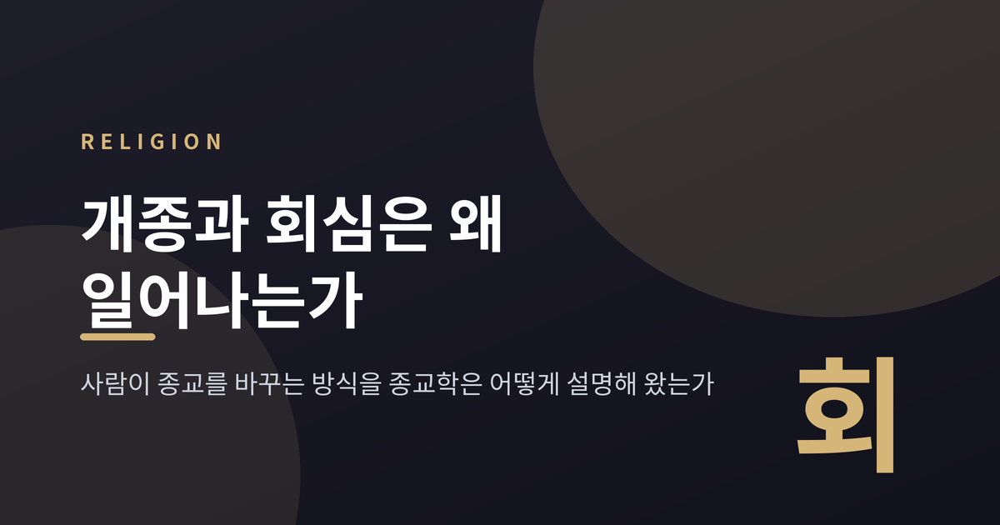
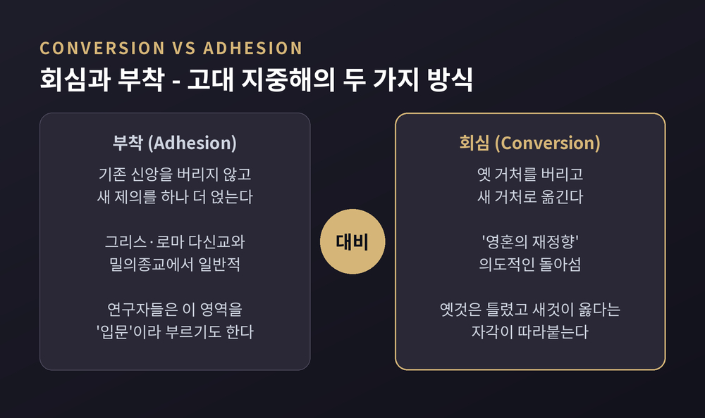
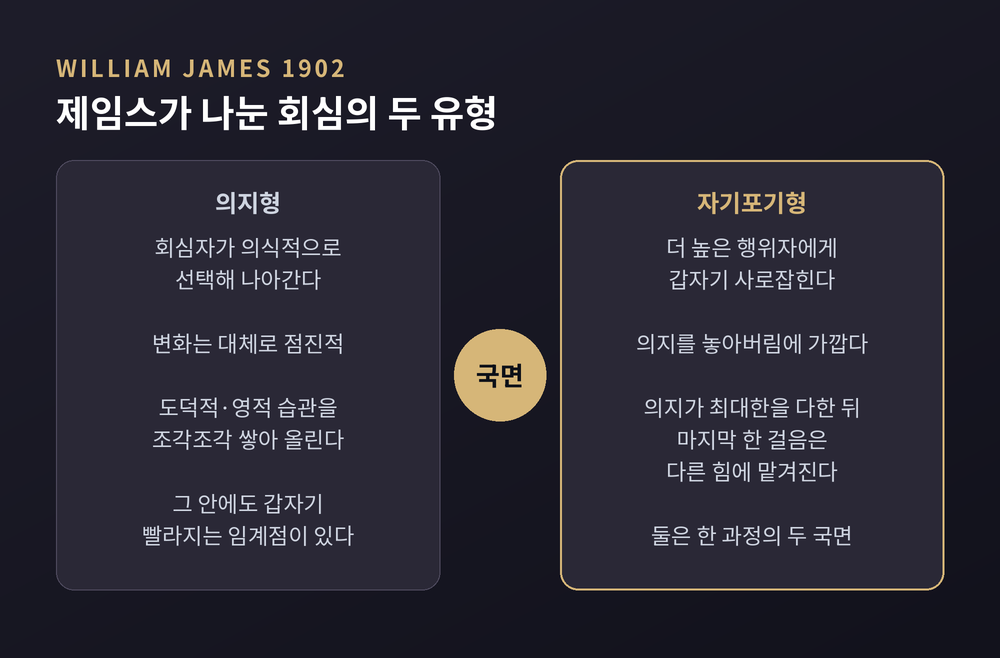
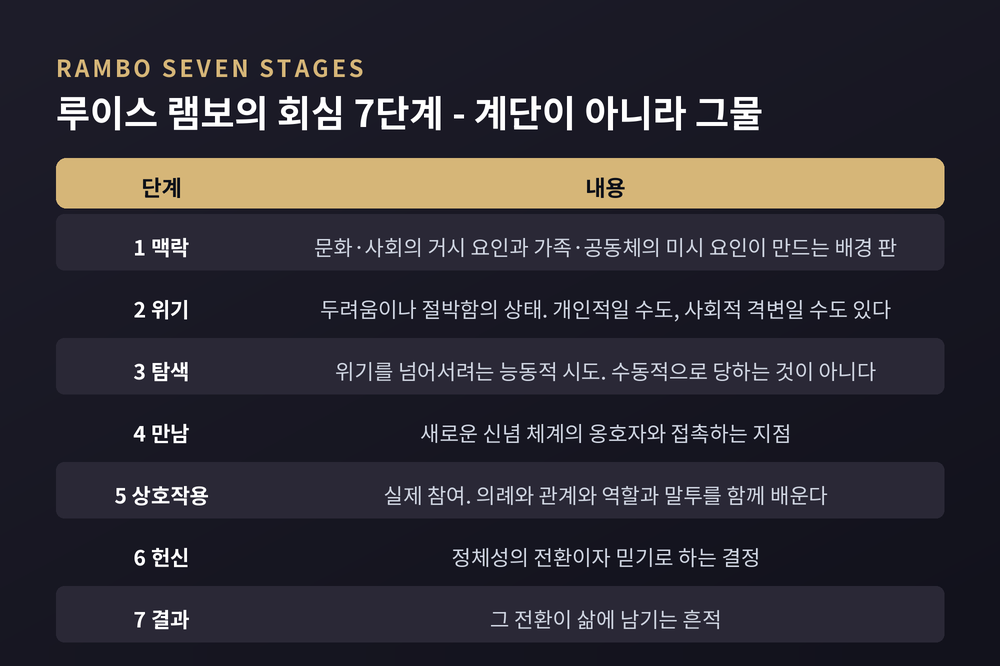
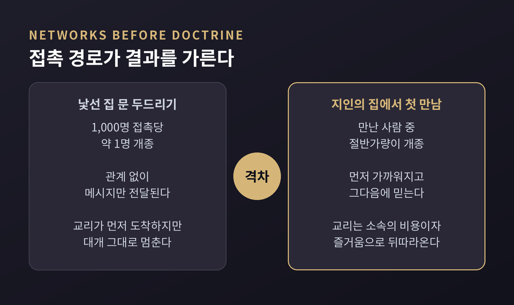
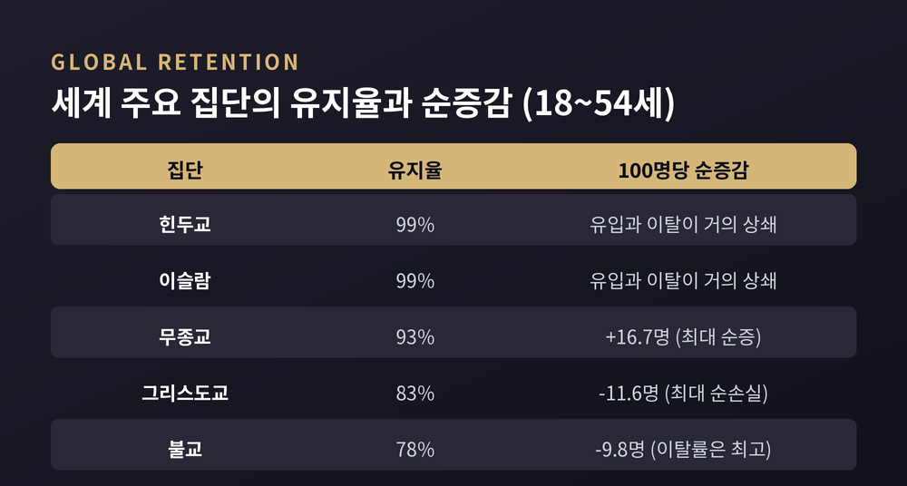
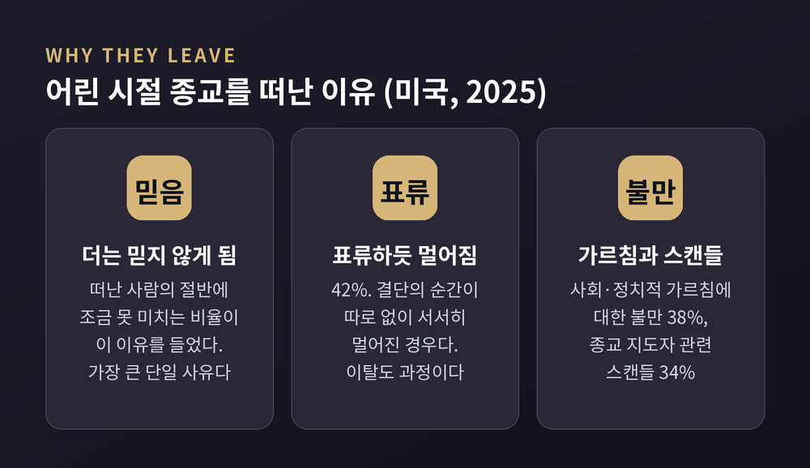

사람이 종교를 바꾸는 방식에 관한 비교종교학 정리

이번 글에서는 개종과 회심을 종교학이 어떻게 설명해 왔는지 정리해 보겠습니다. 어느 쪽으로 옮기는 것이 옳은지를 따지는 글이 아닙니다. 사람이 자기 종교를 바꿀 때 실제로 무엇이 먼저 움직이는지, 학자들이 그 과정을 어떤 언어로 붙잡아 왔는지를 살펴보려는 글입니다.
먼저 세 줄로 요약하면 이렇습니다.
세 줄 요약
회심을 이야기하려면 그 단어의 출신부터 물어야 합니다.
고대 지중해 종교를 다룬 고전이 있습니다. 아서 다비 녹(Arthur Darby Nock)이 1933년 옥스퍼드대 출판부에서 낸 『Conversion』입니다. 알렉산더 대왕부터 히포의 아우구스티누스까지를 훑은 책이고, 지금도 이 분야의 기준점으로 인용됩니다.
녹은 여기서 두 가지를 갈라놓습니다. 회심(conversion)과 부착(adhesion)입니다.
그의 고전적 정의에 따르면 회심이란 "영혼의 재정향(re-orientation of the soul), 무관심이나 이전의 경건 형태로부터 다른 것으로의 의도적인 돌아섬"입니다. 그리고 여기에는 "큰 변화가 일어났고, 옛것은 틀렸으며 새것이 옳다는 자각"이 따라붙습니다. 옛 거처를 버리고 새 거처로 옮기는 일입니다.
부착은 다릅니다. 기존 신앙을 버리지 않은 채 새로운 제의를 하나 더 얹는 방식입니다. 그리스·로마의 다신교 세계나 밀의종교에서는 이쪽이 오히려 일반적이었습니다. 연구자들이 이 영역을 다룰 때 '입문(initiation)'이라는 말을 선호하는 이유도 여기 있습니다.
녹이 이 대비로 보여준 것은 분명합니다. "하나를 택하면 나머지를 버려야 한다"는 배타적 회심 관념 자체가 특정 전통의 산물이라는 사실입니다.

회심을 심리학의 대상으로 처음 본격화한 사람은 윌리엄 제임스입니다. 1902년의 『종교적 경험의 다양성』, 그중 아홉 번째와 열 번째 강의가 회심을 다룹니다.
제임스는 심리학자 에드윈 스타벅의 분류를 이어받아 회심을 두 유형으로 나눕니다.
하나는 의지형(volitional type)입니다. 회심자가 의식적으로 선택해 나아가는 경우입니다. 제임스의 표현으로 이 유형의 변화는 "대체로 점진적이며, 새로운 도덕적·영적 습관을 조각조각(piece by piece) 쌓아 올리는 것"입니다.
다른 하나는 자기포기형(type by self-surrender)입니다. 더 높은 행위자에게 갑자기 사로잡히는 경우입니다. 놓아버림에 가깝습니다.
흥미로운 점은 제임스가 이 둘을 대립시키지 않았다는 데 있습니다. 그는 의지형 안에도 전진이 갑자기 빨라지는 임계점이 늘 있다고 봤습니다. 그리고 이렇게 적었습니다. "대다수의 경우, 의지가 통합을 향해 할 수 있는 최대한을 다했을 때, 마지막 한 걸음은 다른 힘에 맡겨져 의지의 도움 없이 수행되는 것으로 보인다."
갑작스러운 회심과 점진적 회심은 두 개의 종류가 아니라, 한 과정의 두 국면이라는 뜻입니다.

현대 종교학에서 가장 널리 인용되는 틀은 루이스 램보(Lewis R. Rambo)가 1993년 예일대 출판부에서 낸 『Understanding Religious Conversion』입니다. 그는 회심을 일곱 단계로 나눕니다.
맥락(context), 위기(crisis), 탐색(quest), 만남(encounter), 상호작용(interaction), 헌신(commitment), 결과(consequences).
각 단계의 내용은 다음과 같습니다.
맥락은 배경 판입니다. 문화와 사회 같은 거시 요인, 가족과 공동체 같은 미시 요인이 함께 놓입니다. 위기는 두려움이나 절박함의 상태입니다. 개인적인 것일 수도, 사회적 격변일 수도 있습니다. 탐색은 그 위기를 넘어서려는 능동적 시도입니다. 램보는 이 단계가 수동적이지 않다는 점을 강조합니다. 만남은 새로운 신념 체계의 옹호자와 접촉하는 지점입니다. 상호작용은 실제 참여입니다. 의례와 관계와 역할과 말투를 함께 배웁니다. 헌신은 정체성의 전환이자 믿기로 하는 결정입니다. 결과는 그 전환이 삶에 남기는 흔적입니다.
한 가지 오해를 미리 걷어내야 합니다. 이 일곱 단계는 계단이 아닙니다. 램보는 각 단계가 서로 연결되어 동시에 영향을 주고받는다고 봤습니다. 그는 자기 모형이 이전의 과정 모형들보다 더 발견적(heuristic)이고 덜 구속적이라고 주장했습니다.
실제로 이 틀은 파키스탄의 이슬람 개종 연구, 브루나이 두순족 무슬림 개종 연구 등에 적용되며 검증과 수정을 함께 받아 왔습니다.

여기서 종교사회학이 내놓은 가장 반직관적인 발견을 소개하겠습니다.
1965년 12월, 존 로플랜드와 로드니 스타크가 『American Sociological Review』에 논문 하나를 실었습니다. 「Becoming a World-Saver」입니다. 미국에 처음 생긴 통일교 조직을 현장에서 관찰한 연구였습니다.
결론은 이랬습니다. 회심의 일차적 기반은 이념적 호소가 아니라 대인 유대(interpersonal bonds)였습니다.
관찰 내용은 구체적입니다. 친구나 가족 중에 신자가 있으면 회심 가능성이 극적으로 올라갔습니다. 반대로 그 집단을 못마땅해하는 사람과 강한 애착을 가진 이는, 교리에 관심이 있어도 끝내 가입하지 않았습니다. 샌프란시스코에 갓 이주한 사람, 친구와 가족이 멀리 있는 사람이 더 잘 개종했습니다.
그래서 이 조직은 사회적으로 고립된 사람을 찾아낼 때 가장 성공적이었습니다. 그런 사람과는 강한 애착을 가장 빠르게 만들 수 있었기 때문입니다.
교리는 두 번째였습니다. 사람들은 먼저 구성원들과 가까워지고, 그다음에 소속의 비용이자 즐거움의 일부로서 그 믿음을 받아들였습니다.
스타크가 훗날 자주 인용한 수치도 같은 방향을 가리킵니다. 몰몬 선교 기록 분석에 따르면, 낯선 집 문을 두드리는 방식은 대략 1,000명 접촉당 1명이 개종했습니다. 반면 몰몬 친구나 친척의 집에서 처음 만나는 경우는 절반가량이 개종했습니다.
다만 이 수치는 조심해서 다뤄야 합니다. 선교 관리자 기록에 근거한 추정치이고, 전체 전환율을 훨씬 낮게 잡는 다른 계산도 있습니다. 절대값보다 접촉 경로가 결과를 가른다는 방향성 쪽이 안전한 결론입니다.
컬트 연구자들의 최근 정리도 비슷합니다. 가입 가능성이 높은 사람은 잘 속거나 불안정한 사람이 아니라, 인생의 전환기 한복판에 있으면서 이미 호감을 갖고 있던 누군가를 통해 그 집단을 알게 된 사람인 경우가 많습니다.

회심자의 증언을 다룰 때 종교학이 취하는 태도가 하나 더 있습니다.
데이비드 스노와 리처드 마할렉은 1983년 논문에서 회심자를 '하나의 사회적 유형'으로 규정했습니다. 그들이 꼽은 네 가지 속성 중 첫째가 전기적 재구성(biographical reconstruction)입니다.
무슨 뜻이냐면, 회심 서사는 언제나 사후에 다시 쓰인 것이라는 말입니다. 회심 과정에서 배운 신학적 이해와 이야기 패턴에 맞춰, 자신의 과거를 새 관점으로 집중 재해석한 결과물입니다. 두 사람의 결론은 이렇게 요약됩니다. 회심자를 회심자로 만드는 것은 제도적 맥락이나 이념의 내용이 아니라 회심자의 수사(rhetoric)라는 것입니다.
단계 모형 자체를 겨눈 비판도 있습니다. 인류학자 앙리 호런(Henri Gooren)은 2007년 논문과 2010년 저서에서 '회심 커리어(conversion career)'라는 개념을 제안했습니다. 회심은 한 번의 사건이 아니라, 개인이 평생에 걸쳐 오르내리는 종교적 참여 수준의 이동이라는 관점입니다.
그가 제시한 다섯 수준은 선(先)소속, 소속, 회심, 고백, 탈소속입니다.
호런의 비판은 두 가지로 압축됩니다. 하나는 '위기 결정론'입니다. 회심의 원인을 개인의 위기로 환원해 버리는 습관을 가리킵니다. 다른 하나는 '청소년기 편향'입니다. 회심을 청소년기의 일로만 보는 시각입니다. 그는 생애주기 전체를 봐야 하고, 젠더 감수성도 필요하다고 지적했습니다.
램보와 호런 중 한쪽이 폐기된 것은 아닙니다. 뒤의 것이 앞의 것을 보완하며 함께 쓰이고 있다고 보는 편이 정확합니다.
여기서 통계를 보겠습니다.
퓨리서치센터는 '개종(conversion)'이라는 말 대신 '종교 전환(religious switching)'이라는 용어를 씁니다. 이동의 방향이 다양하고, 공식 의례 없이도 일어나기 때문입니다. 측정은 단순합니다. "지금 당신의 종교는?"과 "어린 시절 어떤 종교에서 자랐나?" 두 질문의 차이를 봅니다.
2025년 3월 발표된 36개국 조사부터 보겠습니다. 표본은 약 8만 명입니다.
어릴 적 종교와 지금 종교가 다른 성인의 비율은 한국이 50%로 가장 높았습니다. 네덜란드 36%, 미국 28%, 브라질 21%가 뒤를 이었습니다. 반대로 인도·이스라엘·나이지리아·태국은 95% 이상이 어릴 적 종교를 그대로 유지했습니다.
이동의 대부분은 무종교로 향합니다. 스웨덴 성인의 29%는 그리스도인으로 자랐지만 지금은 무신론자·불가지론자이거나 "특별히 없음"이라고 답합니다. 일본은 23%, 한국은 13%가 불교도로 자랐지만 지금은 무종교입니다.
떠난 사람과 들어온 사람의 비율로 보면 격차가 더 선명해집니다. 독일 그리스도교는 19.7 대 1.0입니다. 떠난 사람 20명당 들어온 사람이 1명이라는 뜻입니다. 일본 불교는 11.7 대 1.0입니다. 이탈리아 무종교는 1.0 대 28.7로, 압도적인 순증입니다.
물론 반대 방향도 있습니다. 싱가포르 그리스도교는 1.0 대 3.2로 오히려 늘었고, 나이지리아는 1.0 대 1.0으로 균형을 이룹니다. 헝가리는 무종교 항목에서 1.9 대 1.0을 기록했습니다. 무종교로 자랐다가 종교를 갖게 된 사람이 더 많은 드문 사례입니다. 36개국 중 무종교로 자랐다가 지금 종교가 있는 사람의 비율이 가장 높은 나라는 한국(9%)이었습니다.
2025년 6월 발표된 117개국 추정치는 이 그림을 더 넓게 확인해 줍니다. 2010년 기준 세계 18~54세 인구의 92%를 포괄한 분석입니다.
이 연령대의 91%가 어릴 적 종교(또는 무종교)를 유지하고 있습니다. 종교 안에서 자란 사람 중 약 10%가 전환한 셈입니다. 유지율은 집단마다 크게 갈립니다. 힌두교와 이슬람이 각각 99%, 무종교 93%, 그리스도교 83%, 불교가 78%로 가장 낮습니다.
100명당 순증감으로 환산하면 이렇습니다. 그리스도교는 17.1명이 떠나고 5.5명이 들어와 11.6명 순손실입니다. 불교는 22.1명이 떠나고 12.3명이 들어와 9.8명 순손실입니다. 무종교는 24.2명이 들어오고 7.5명이 떠나 16.7명 순증입니다.
2010년에서 2020년 사이 세계 인구 대비 그리스도교 비중은 1.8%p, 불교는 0.8%p 떨어졌습니다.
경제 발전과의 상관도 뚜렷합니다. 유엔 인간개발지수 0.8 이상인 51개 지역에서는 중앙값 18%가 전환했습니다. 0.55 미만인 16개국에서는 3%에 그쳤습니다. 다만 완벽한 상관은 아닙니다. 무슬림 다수 국가들과 태국·캄보디아는 지수와 무관하게 전환율이 낮습니다.

이탈을 다루는 연구 영역도 따로 있습니다. 탈회심(deconversion)입니다.
하인츠 슈트라이프는 2021년 논문에서 이를 "재소속 없는 탈소속"으로 규정했습니다. 그의 핵심 관찰은 두 가지입니다. 탈회심은 단일 사건이 아니라 연장된 과정이라는 것, 그리고 비슷한 배경을 가진 사람들 사이에서도 공통된 하나의 경로가 없다는 것입니다. 그는 이탈의 유형을 세속화형, 이단형(다른 종교로 이동), 사사화형(제도는 떠나되 개인 신앙은 유지)으로 나눴습니다.
구체적인 이유는 미국 조사에서 확인됩니다. 2025년 12월 퓨리서치센터 보고서에 따르면 미국 성인의 56%가 어린 시절 종교를 유지하고 있고, 35%는 그 종교에서 벗어났습니다. 떠난 사람들은 대체로 서른 이전에 떠났습니다.
이유는 복수로 겹칩니다. 절반에 조금 못 미치는 사람이 그 가르침을 더는 믿지 않게 되었다고 답했습니다. 표류하듯 멀어졌다가 42%, 사회·정치적 가르침에 대한 불만이 38%, 종교 지도자 관련 스캔들이 34%였습니다. 가톨릭을 떠난 사람 중에서는 여성 대우에 대한 불만과 "시대에 뒤떨어졌다"는 인식이 각각 27%로 나왔습니다.
남은 사람들의 이유도 함께 볼 필요가 있습니다. 그 가르침을 믿기 때문이 64%, 영적 필요를 채워 주기 때문이 61%, 삶에 의미를 주기 때문이 56%였습니다. 어린 시절의 긍정적 종교 경험과 규칙적인 실천 속에서 자란 경험이 성인기 유지에 유의미하게 작용했습니다.
수치만 보면 종교가 계속 줄어드는 것처럼 읽힙니다. 그런데 미국의 경우 2023~24년 조사에서 그리스도인 비율 62%, 무종교 29%로, 수십 년간 이어지던 감소세가 2019년 이후 비교적 안정되었습니다. 무종교의 증가도 적어도 일시적으로는 멈춰 섰습니다.
퓨 자신도 유보를 답니다. 연령대별 격차가 세속화의 신호일 수도 있지만, 사람이 나이 들며 더 종교적이 되는 생애주기 효과일 수도 있습니다. 한 시점의 조사로는 둘을 가릴 수 없습니다.

지금까지의 논의에는 전제가 하나 깔려 있습니다. 사람은 하나의 종교에 속하며, 옮기려면 이전 것을 버려야 한다는 전제입니다.
이 전제가 잘 통하지 않는 곳이 있습니다.
동아시아가 대표적입니다. 퓨리서치센터가 2023년 홍콩·일본·한국·대만·베트남 성인 1만여 명을 조사한 결과, 이 지역의 종교 전환율은 세계 어느 곳보다 높았습니다. 그런데 동시에 사람들은 여러 전통에 걸쳐 있었습니다. 일본 성인의 55%는 자기 종교 외에 최소 하나 이상의 종교·철학 전통에 개인적 연결감을 느낀다고 답했습니다.
신도(神道)의 숫자가 이 사정을 잘 보여줍니다. 자기 종교가 신도라고 답한 일본 성인은 4%뿐입니다. 그러나 27%는 신도적 삶의 방식에 개인적 연결감을 느낀다고 했고, 38%는 카미(神)에게 기도하거나 경의를 표한다고 했습니다. 무종교라고 답한 사람들도 조상 제사와 분향을 실천합니다.
이곳에서는 '어느 하나를 택하고 나머지를 버린다'는 모형이 잘 작동하지 않습니다. 소속을 묻는 설문 문항 자체가 현실을 다 담지 못하는 셈입니다.
유대교는 또 다른 경우입니다. 능동적 포교를 하지 않는 전통입니다. 이유로는 두 가지가 함께 거론됩니다. 신학적으로는 탈무드(산헤드린 105a)가 의로운 이방인에게도 다가올 세계의 자리를 인정하기 때문에 개종을 권할 유인이 약합니다. 역사적으로는 유대교로의 개종이 위험했습니다. 포교는 지역 권력과의 취약한 관계를 흔들었고, 일부 지역에서는 개종 자체가 불법이었습니다. 랍비들이 개종 지원자를 여러 번 만류하는 관행이 여기서 나옵니다.
인도는 개종을 법으로 규제하는 사례입니다. 2025년 기준 약 12개 주에 개종금지법이 있습니다. 2025년 9월 라자스탄 주 의회를 통과한 법안은 재범이나 집단 개종에 최대 25년 또는 종신형까지 두는 강경한 내용을 담았습니다.
이 법을 두고는 입장이 갈립니다. 지지 측은 강요와 유인에 의한 개종을 막기 위한 장치라고 봅니다. 비판 측은 실제로는 소수종교를 겨냥하며 종교의 자유를 위협한다고 봅니다. 여기에 한 가지 사실을 덧붙일 수 있습니다. 힌두교의 유지율은 99%로 세계 최고 수준입니다. 법의 강도와 실제 이동 규모 사이의 간극도 논쟁의 일부입니다.
법이 이동을 막는 사례는 더 있습니다. 알제리·브루나이·이집트·말레이시아에는 이슬람을 떠나는 것을 처벌하는 법이 있습니다.
정리하면 이렇습니다.
회심을 설명하는 이론들은 서로 다른 층위를 봅니다. 녹은 개념의 역사를, 제임스는 개인의 내면을, 램보는 과정의 구조를, 로플랜드와 스타크는 관계망을, 슈트라이프는 떠나는 쪽을 봤습니다. 어느 하나가 전부를 설명하지는 못합니다. 회심을 한 문장으로 요약하려는 시도는 대체로 실패해 왔습니다.
다만 반복해서 확인되는 것이 하나 있습니다.
"사람은 믿음을 만나서 사람에게 가는 것이 아니라, 사람을 만나서 믿음에 이른다."
예전에는 회심을 벼락 같은 한순간의 사건으로 그렸습니다. 지금 연구자들은 그 앞뒤로 이어진 긴 시간과 관계의 그물을 함께 봅니다.
누군가의 종교가 바뀐 이유가 궁금하시다면, 그가 무엇을 믿게 되었는지보다 그 무렵 그의 곁에 누가 있었는지를 먼저 물어보시면 좋겠습니다.